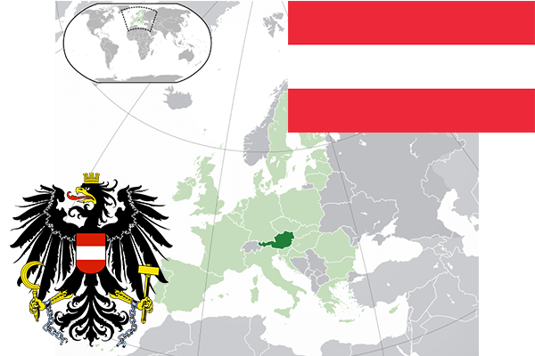

To`liq nomi: Avstriya Respublikasi
Region: Markaziy Yevropa
Qonunchilik shakli: Federativ Respublika
Mustaqillik kuni: 12-noyabr 1918 yil. Avsteriya-Vengriyadan
Poytaxti: Vena
Maydoni: 83 879 km² (dunyoda 112 -o`rinda )
Chegaradosh davlatlari: Germaniya,Chexiya, Slovakiya, Vengriya, Sloveniya, Italiya, Shveysariya, Lixtenshteyn
Aholisi: 8 711 770 (dunyoda 94 -o`rinda ) 2015 -yil roʻyxat
Aholi zichligi: 102,1/km²
Aholining o`rtacha yoshi: 79,3 yil ( 82,3 ayollar, 76,3 erkaklar)
Rasmiy tili: nemischa
Dini: 78% katolik, 8% protestant, 2% musulmon, 12% ateist
Pul birligi: Yevro (UER)
Telefon prefiksi: +43
Internet domen: .at .eu
Xalqaro tashkilotlarga a`zoligi: Yevropa Ittifoqi (1995-yildan), BMT (1955 -yildan)
Dengiz va okeanlarga chiqishi: yo`q
YIM: Butun: $ 403,768 mlrd, Jon boshiga: $ 47 188 (2015 - yil roʻyxati)
Yirik shaharlari: Vena, Grats, Lints, Zalsburg, Insbruk